ggplot
Para este tópico vamos utilizar o ggplot2. O ggplot2 é um pacote do R voltado
para a criação de gráficos estatísticos. Ele é baseado na Gramática dos Gráficos
(grammar of graphics, em inglês), criado por Leland Wilkinson, que é uma
resposta para a pergunta: o que é um gráfico estatístico? Resumidamente, a gramática
diz que um gráfico estatístico é um mapeamento dos dados a partir de atributos
estéticos (cores, formas, tamanho) em formas geométricas (pontos, linhas, barras).
Para mais informações sobre a Gramática dos Gráficos, você pode consultar o livro The Grammar of graphics, escrito pelo Leland Wilkinson e o livro ggplot2: elegant graphics for data analysis, do Hadley Wickham. Um pdf do livro também está disponível.
Para quem quiser se aprofundar mais com o ggplot2, o DataCamp possui dois cursos
focados em visualização. É possível começar o curso gratuitamente, mas para terminar,
tem que pagar.
Antes de começar, instale o pacote digitando install.packages("ggplot2").
Banco de dados
A seguir, vamos discutir os aspectos básicos para a construção de gráficos com o
pacote ggplot2. Para isso, utilizaremos o banco de dados contido no objeto mtcars.
Para visualizar as primeiras linhas deste banco, utilize o comando:
head(mtcars)
## mpg cyl disp hp drat wt qsec vs am gear carb
## Mazda RX4 21.0 6 160 110 3.90 2.620 16.46 0 1 4 4
## Mazda RX4 Wag 21.0 6 160 110 3.90 2.875 17.02 0 1 4 4
## Datsun 710 22.8 4 108 93 3.85 2.320 18.61 1 1 4 1
## Hornet 4 Drive 21.4 6 258 110 3.08 3.215 19.44 1 0 3 1
## Hornet Sportabout 18.7 8 360 175 3.15 3.440 17.02 0 0 3 2
## Valiant 18.1 6 225 105 2.76 3.460 20.22 1 0 3 1
O mtcars é um banco de dados de 1974 extraído da revista Motor Trend US que
compreende consumo de combustível e outros 10 aspectos de performance e engenharia
de 32 automóveis.
Entre as variáveis deste banco de dados estão:
mpg: consumo de combustível (milhas por galão)disp: cilindrada, que é o volume de deslocamento do motor
Para saber mais sobre o mtcarts, digite help(mtcars).
As camadas de um gráfico
Antes de mais nada, vamos carregar o ggplot2 usando:
library(ggplot2)
No ggplot2, os gráficos são construídos camada por camada (ou, layers, em inglês),
sendo que a primeira delas é dada pela função ggplot() (não tem o “2”). Cada camada
representa um tipo de mapeamento ou personalização do gráfico. O código abaixo é um
exemplo de um gráfico bem simples, construído a partir das duas principais camadas.
ggplot(data = mtcars) +
geom_point(mapping = aes(x = disp, y = mpg))
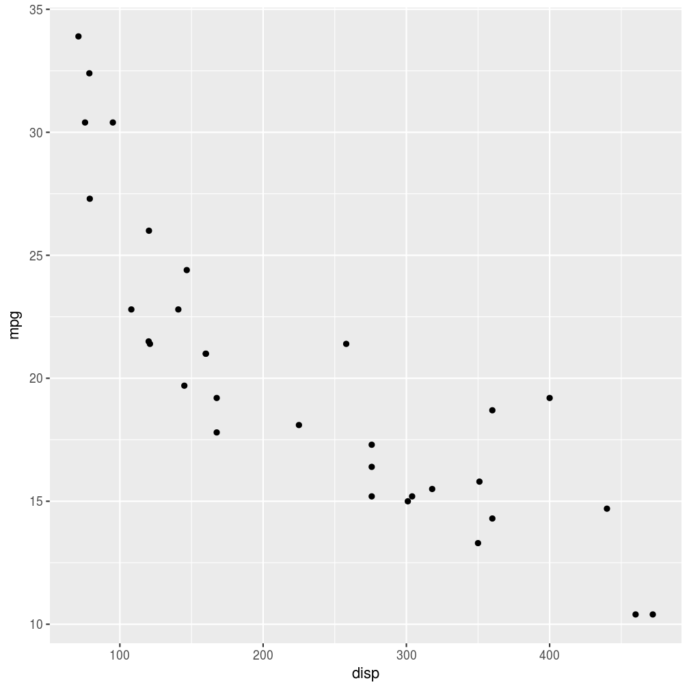
Observe que o primeiro argumento da função ggplot é um data frame. A função aes()
descreve como as variáveis são mapeadas em aspectos visuais de formas geométricas
definidas pelos geoms. Aqui, essas formas geométricas são pontos, selecionados pela
função geom_point(), gerando, assim, um gráfico de dispersão. A combinação dessas
duas camadas define o tipo de gráfico que você deseja construir.
Aesthetics
A primeira camada de um gráfico deve indicar a relação entre os dados e cada aspecto visual do gráfico, como qual variável será representada no eixo x, qual será representada no eixo y, a cor e o tamanho dos componentes geométricos etc. Os aspectos que podem ou devem ser mapeados depende do tipo de gráfico que você deseja fazer.
No exemplo acima, atribuímos aspectos de posição: ao eixo y mapeamos a variável mpg
(milhas por galão) e ao eixo x a variável disp (cilindradas). Outro aspecto que pode
ser mapeado nesse gráfico é a cor dos pontos
ggplot(data = mtcars) +
geom_point(mapping = aes(x = disp, y = mpg, colour = as.factor(am)))
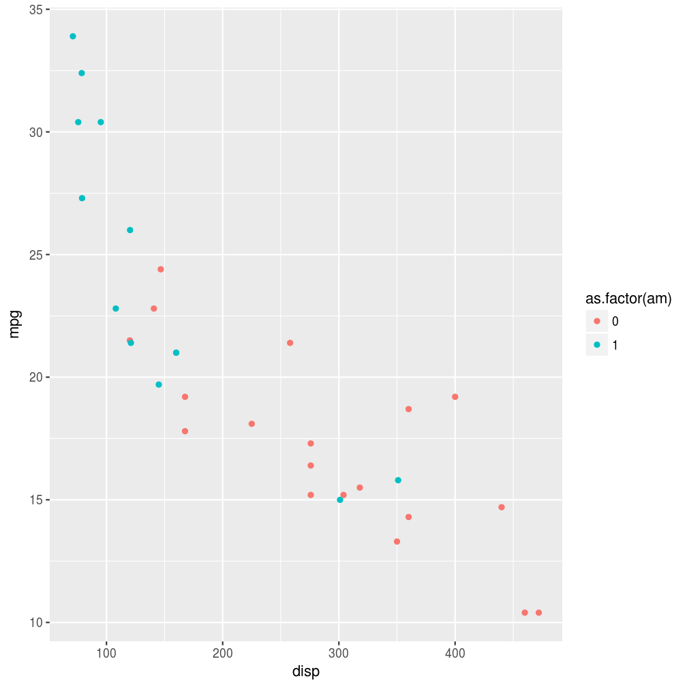
Agora, a variável am (tipo de transmissão) foi mapeada à cor dos pontos, sendo que pontos vermelhos correspondem à transmissão automática (valor 0) e pontos azuis à transmissão manual (valor 1). Observe que inserimos a variável am como um fator, pois temos interesse apenas nos valores “0” e “1”. No entanto, também podemos mapear uma variável contínua à cor dos pontos:
ggplot(mtcars) +
geom_point(mapping = aes(x = disp, y = mpg, colour = cyl))
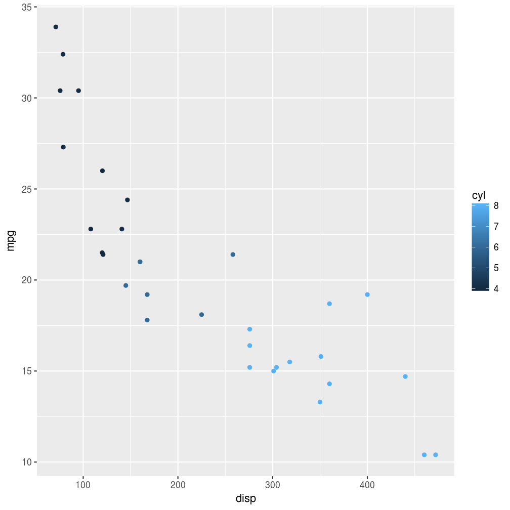
Aqui, o número de cilindros, cyl, é representado pela tonalidade da cor azul.
Nota: por default, a legenda é insirida no gráfico automaticamente.
Também podemos mapear o tamanho dos pontos a uma variável de interesse:
ggplot(mtcars) +
geom_point(mapping = aes(x = disp, y = mpg, colour = cyl, size = wt))
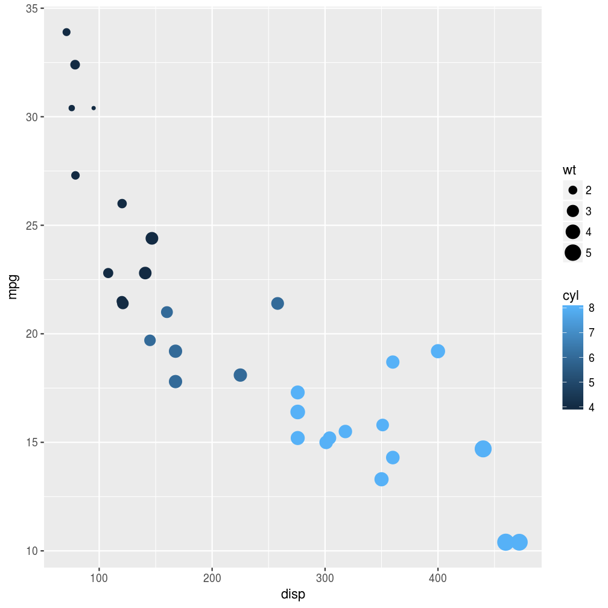
Exercício: pesquisar mais aspectos que podem ser alterados no gráfico de dispersão. Essa é uma boa referência.
Geoms
Os geoms definem qual forma geométrica será utilizada para a visualização dos
dados no gráfico. Como já vimos, a função geom_point() gera gráficos de dispersão
transformando pares (x,y) em pontos. Veja a seguir outros geoms bastante utilizados:
geom_line- para linhas definidas por pares (x,y)geom_abline- para retas definidas por um intercepto e uma inclinaçãogeom_hline- para retas horizontaisgeom_boxplot- para boxplotsgeom_histogram- para histogramasgeom_density- para densidadesgeom_area- para áreasgeom_bar- para barras
Veja a seguir como é fácil gerar diversos gráficos diferentes utilizando a mesma estrutura do gráfico de dispersão acima:
ggplot(mtcars) +
geom_boxplot(aes(x = as.factor(cyl), y = mpg))
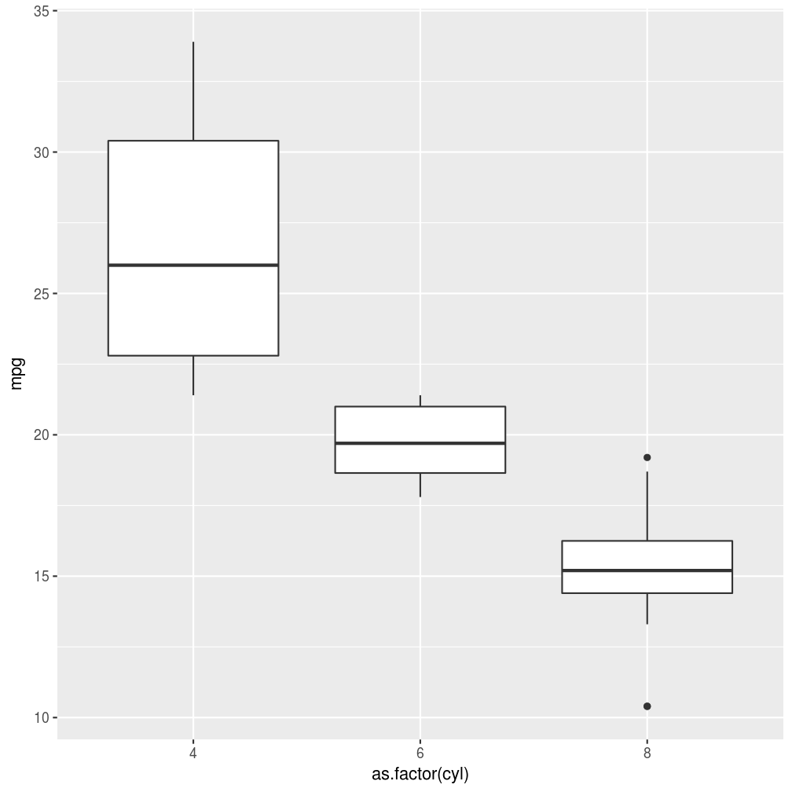
Note que para fazer um boxplot para cada grupo, precisamos passar para o aspecto
x do gráfico uma variável do tipo factor.
ggplot(mtcars) +
geom_histogram(aes(x = mpg))
## `stat_bin()` using `bins = 30`. Pick better value with `binwidth`.
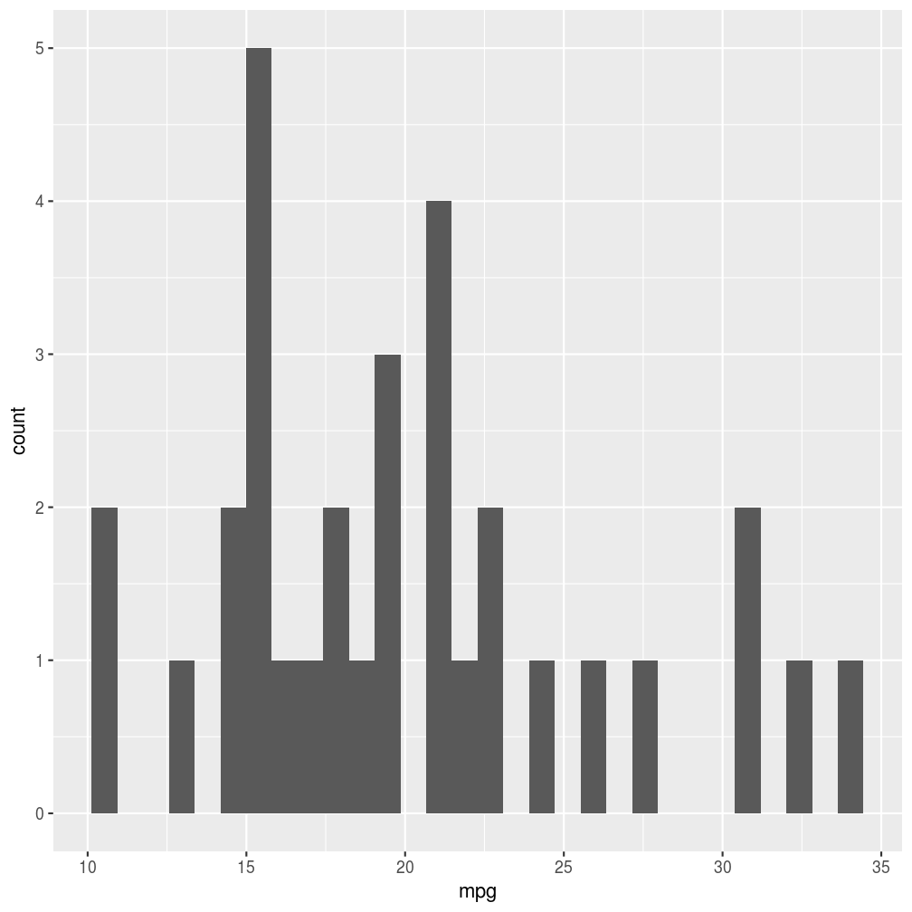
ggplot(mtcars) +
geom_bar(aes(x = as.factor(cyl)))

Um padrão para os gráficos
Você deve ter percebido que, para fazer um gráfico usando `ggplot2` e a gramática
dos gráficos, existe um padrão:
ggplot(data = DATA) + GEOM_FUNCTION(mapping = aes(MAPPINGS))
Para fazer um gráfico, basta substituir DATA por um banco de dados, GEOM_FUNCTION por
uma função geométrica e MAPPINGS por uma coleção de mapas estéticos. Isso será muito útil quando você for fazer o seu próprio gráfico.
Exercícios
- Rode
ggplot(data = mtcars). O que você vê? - Quantas linhas existem no
mtcars. Quantas colunas? Dica: use a funçãonrows. - O que a variável
qsecdescreve. Leia o help domtcarspara encontrar. - Faça um gráfico de dispersão de
mpgporqsec - O que acontece se você fizer um gráfico de dispersão de
vspormpg? Porque o gráfico não é útil?
Combinando gráficos
Considere os 2 gráficos a seguir.
# esquerda
ggplot(mtcars) +
geom_point(aes(y = mpg, x = disp))
# direita
ggplot(mtcars) +
geom_smooth(aes(y = mpg, x = disp))
## `geom_smooth()` using method = 'loess'
Os gráficos são similares e completaam-se. O da esquerda, mostra como os pontos estão distribuídos. Ele mostra uma tendência de aumento do consumo de combustível de acordo com as cilindradas. Já o gráfico da direita resume essa relação. Simplificando-a para uma linha de tendência com alguma margem de confiança.
Esses dois gráficos se completam e ficam bons juntos. Com o ggplot2, é muito fácil
sobrepor os dois gráficos, pois ele é pensado para que cada gráfico seja feito com
uma combinação de camadas. Veja o código abaixo.
ggplot(mtcars) +
geom_point(aes(y = mpg, x = disp)) +
geom_smooth(aes(y = mpg, x = disp))
## `geom_smooth()` using method = 'loess'

Desta forma, sobrepusemos os pontos e a linha de suavização. No entanto, duplicamos alguns trechos no nosso código, o que geralmente não é bom. Imagine se você precisar
mudar a variável do eixo y, você precisará trocar o nome da variável em mais de um
lugar do código. Para resolver isso, você pode definir o mapping apenas uma vez
dentro da declaração do gráfico, conforme o código a seguir.
ggplot(mtcars, aes(y = mpg, x = disp)) +
geom_point() +
geom_smooth()
## `geom_smooth()` using method = 'loess'

Veja que isso gera o mesmo gráfico!
Veja que mesmo com dois geom’s, o ggplot segue a mesma regra para mapear as
variáveis para as aesthetics. Por exemplo, se você mapear uma variável para
a cor, você obterá o seguinte gráfico.
ggplot(mtcars, aes(y = mpg, x = disp, colour = as.factor(cyl))) +
geom_point() +
geom_smooth(method = "lm")
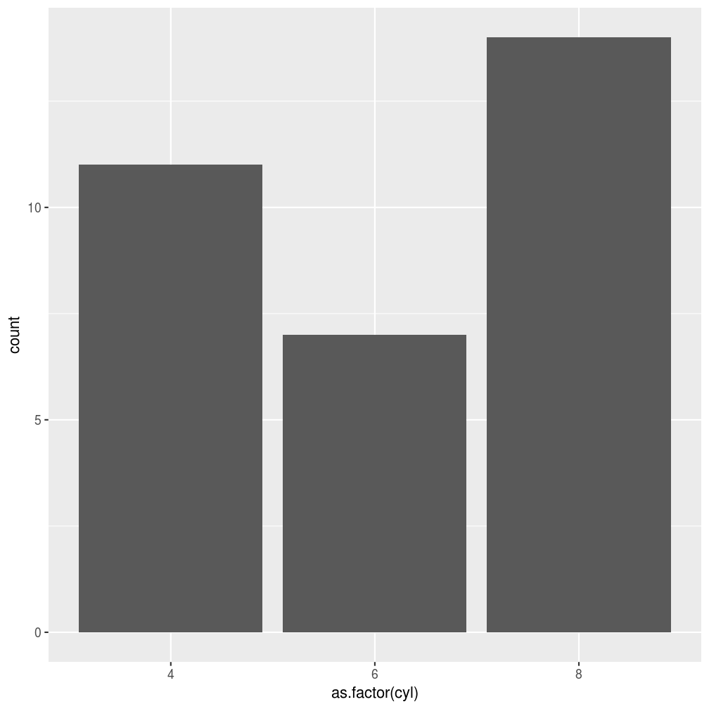
O ggplot2 agora desenhou uma reta para cada um dos grupos de pontos e coloriu
cada grupo de pontos de uma cor diferente. Em alguns casos, você pode querer mapear
a cor em apenas uma das camadas do gráfico. Isso pode ser feito da seguinte forma:
ggplot(mtcars, aes(y = mpg, x = disp)) +
geom_point(aes(colour = as.factor(cyl))) +
geom_smooth(method = "lm")
Agora, cada grupo de pontos tem uma cor, mas a reta é única para todos os pontos.
Alterando os padrões do gráfico
Até agora, sempre mapeamos uma forma estética à uma variável. Muitas vezes queremos apenas modificar esta forma estética sem mapeá-la a outra variável. Por exemplo, no gráfico a seguir, modificamos a cor de todos os pontos.
ggplot(mtcars, aes(y = mpg, x = disp)) +
geom_point(colour = "red")
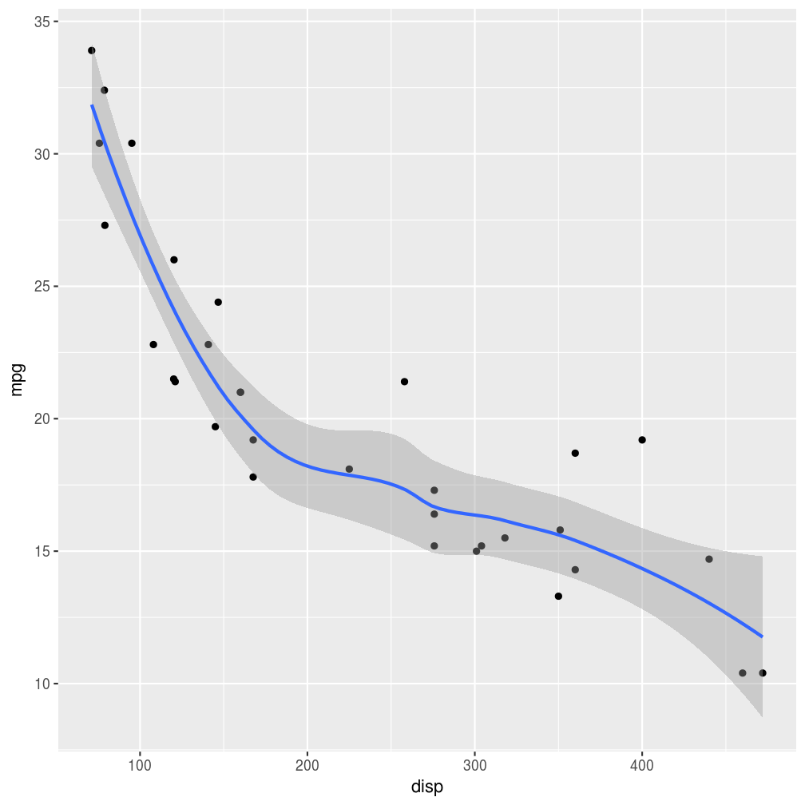
A principal diferença aqui é que especificamos o argumento colour fora da função
aes. Dessa forma, podemos controlar todos os parâmetros
de cada forma geométrica.
ggplot(mtcars, aes(y = mpg, x = disp)) +
geom_point(colour = "red", size = 2, shape = 3, alpha = 0.5)
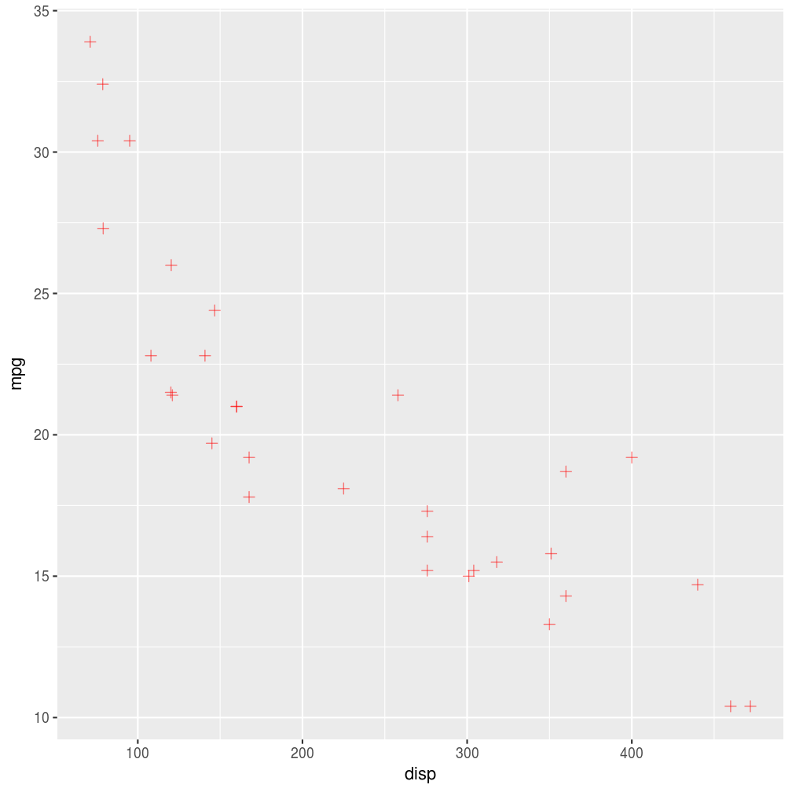
Facets
Uma funcionalidade muito útil do ggplot2 é a possibilidade de usar facets.
Isso auxilia na visualização de diferentes subconjuntos dos dados em gráficos
separados, permitindo a visualização de comportamentos diferentes dependendo
do grupo.
ggplot(mtcars, aes(y = mpg, x = disp)) +
geom_point() +
geom_smooth(method = "lm") +
facet_wrap(~am)
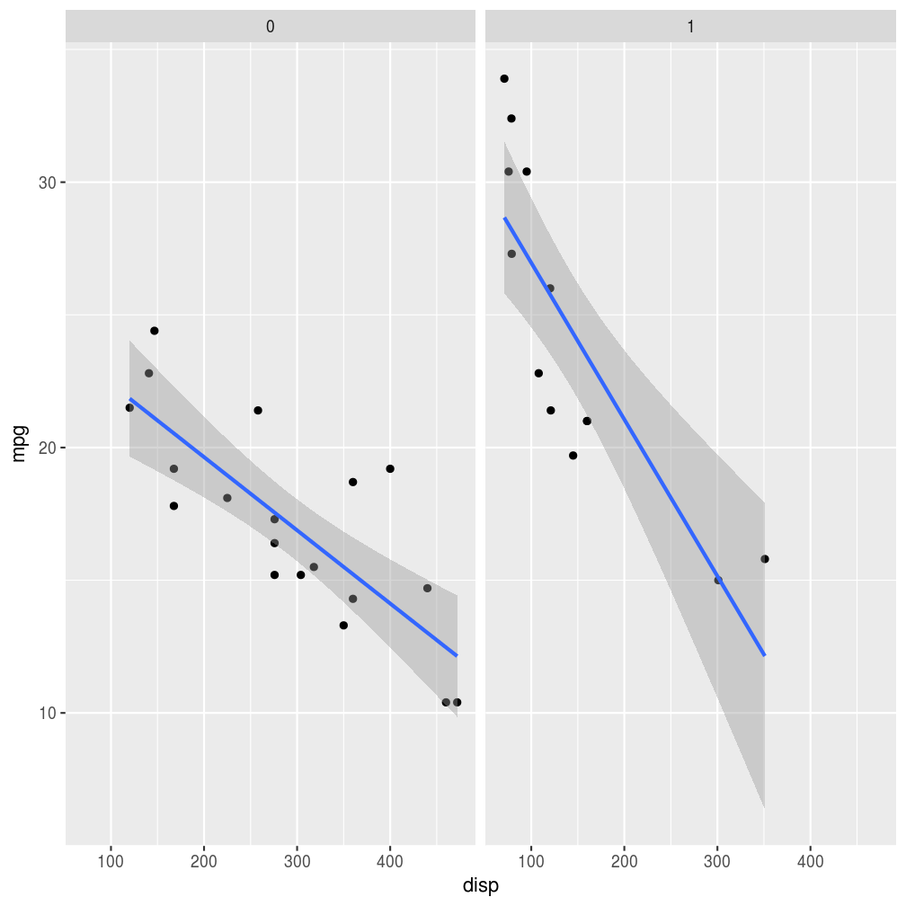
No gráfico acima, rapidamente conseguimos visualizar que se o carro não é automático o consumo de combustível é muito menor do que quando o carro é automático. Também conseguimos ver que a inclinação das retas é bem diferente dependendo do carro ser automático/manual.
Exercício
- O que tem de errado no código abaixo? Por que os pontos não ficaram azuis?
ggplot(data = mpg) +
geom_point(mapping = aes(x = displ, y = hwy, color = "blue"))

- Mapeie uma variável contínua para uma cor, tamanho e forma. Como essas formas estéticas se comportam diferente para variáveis categóricas vs. contínuas?
Começando de um simples boxplot feito no ggplot2 vamos fazer diversas alterações nas legendas. O gráfico inicial é construido da seguinte forma:
library(ggplot2)
# boxplot simples
bp <- ggplot(data=PlantGrowth, aes(x=group, y=weight, fill=group)) + geom_boxplot()
bp
Removendo totalmente a legenda
Existem diversas maneiras para remover a legenda de um gráfico no ggplot2. A forma mais simples é usar guides(fill = FALSE) com fill sendo o atributo gráfico do qual você deseja remover a legenda.
# aqui definimos fill = FALSE, porque é o atributo do gráfico que relacionamos
# a alguma variável.
bp + guides(fill = FALSE)
# também é possível remover a legenda por meio da escala de cores
# aqui também usamos o scale_fill_discrete, porque associamos fill
# a uma variável anteriormente.
bp + scale_fill_discrete(guide = F)
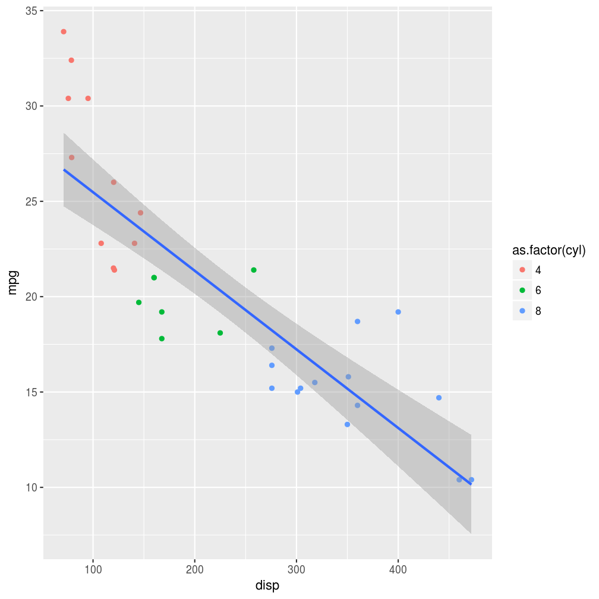
# o comando a seguir remove todas as legendas, não importa o atributo que ela
# esteja representando.
bp + theme(legend.position="none")
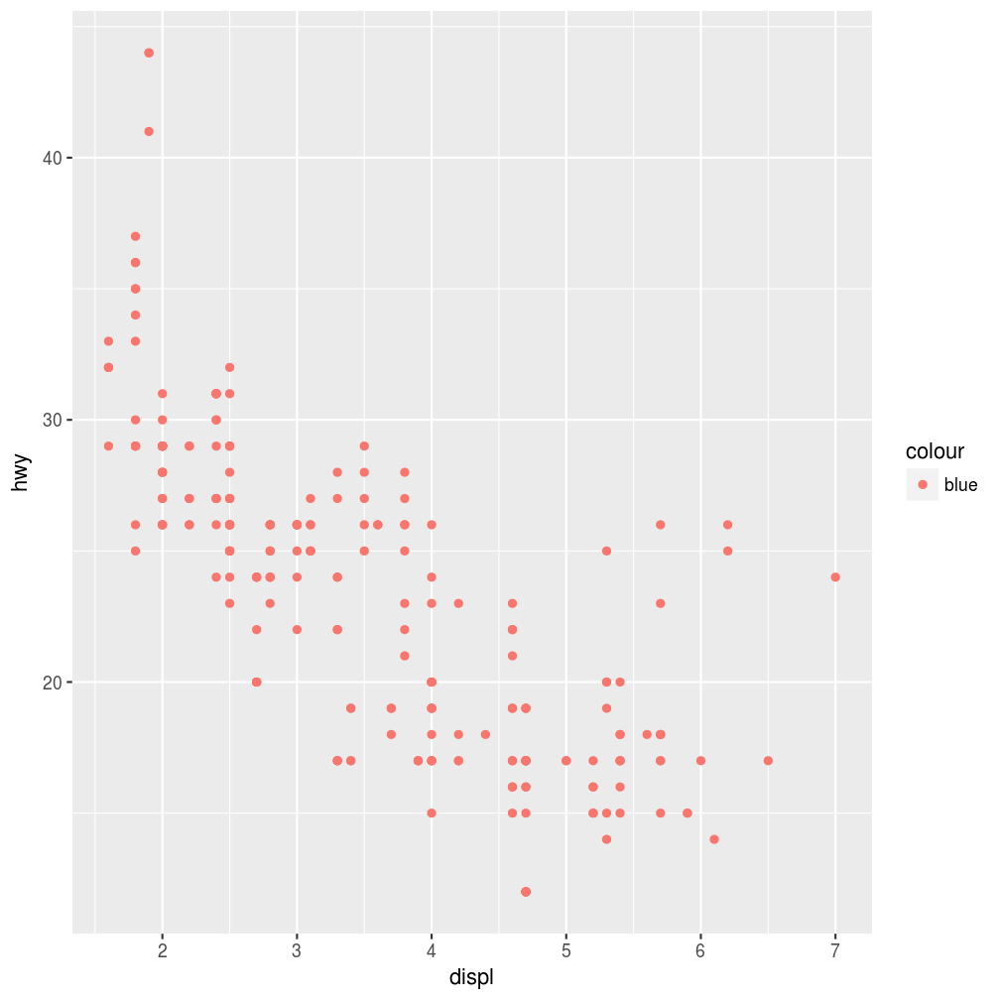
Alterando a ordem dos itens
Para alterar a ordem dos itens na legenda do gráfico no ggplot2, usamos o comando da escala de cores.
bp + scale_fill_discrete(breaks=c("trt1","ctrl","trt2"))
bp
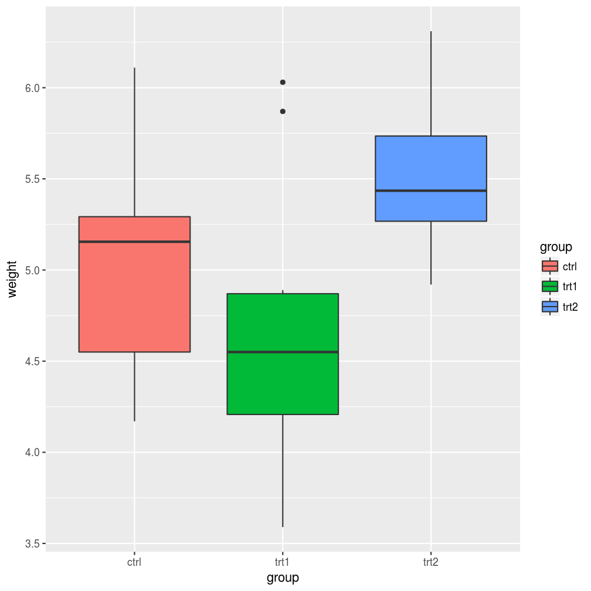
Dependendo dos aspectos gráficos (cores, formatos, preenchimentos) especificados, você pode precisar usar alguma das seguintes funções: scale_fill_manual, scale_colour_hue, scale_colour_manual, scale_shape_discrete, scale_linetype_discrete.
Você pode também querer inverter a ordem dos itens da legenda. Isso pode ser feito de uma das seguintes maneiras.
bp + guides(fill = guide_legend(reverse=TRUE))
bp + scale_fill_discrete(guide = guide_legend(reverse=TRUE))
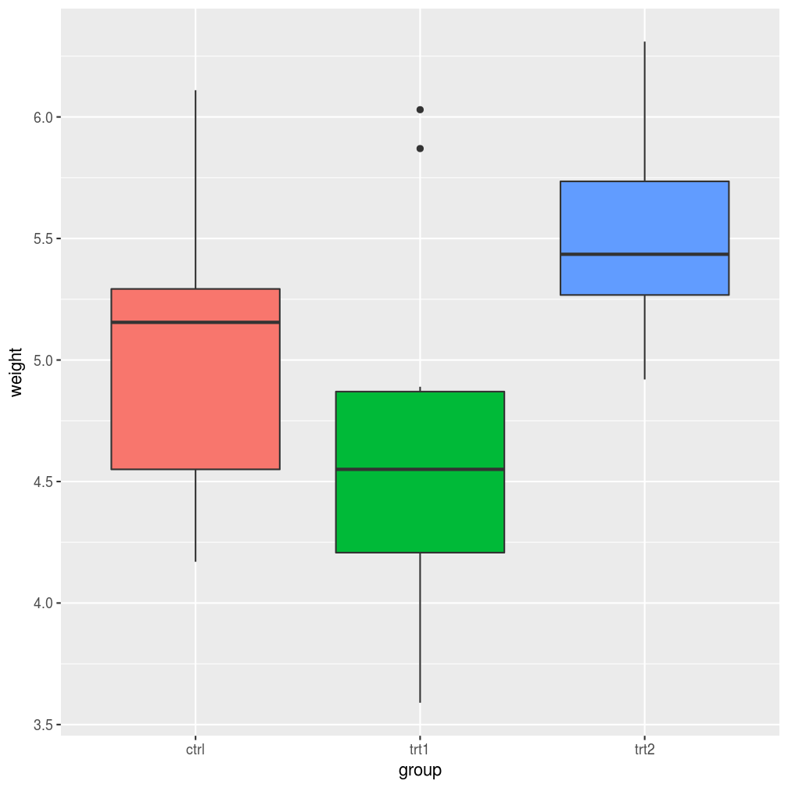
Removendo os títulos da legenda
Algumas vezes é necessário remover o título das legendas do gráfico feito no ggplot2.
Veja a seguir algumas maneiras:
# Remove o título apenas da legenda do preenchimento (fill)
bp + guides(fill=guide_legend(title=NULL))
# Remove o título de todas as legendas
bp + theme(legend.title=element_blank())
Modificando texto, cores e rótulos
Existem duas formas para modificar os textos e rótulos das legendas. Uma delas é modificar o data.frame de forma com que os fatores tenham o mesmo nome que você deseja na legenda. Outra forma é usando as funções de scale.
Veja algumas modificações que podem ser feitas por meio das funções de scale. Como a variável group está associada ao atributo fill, usamos as funções scale_fill_xxx.
# usamos scale_fill_discrete porque não queremos alterar as cores padrão,
# mas queremos que cada fator esteja associado a uma cor de tom diferente.
# mudamos aqui os rótulos e o título da legenda.
bp + scale_fill_discrete(name="Experimental\nCondition",
breaks=c("ctrl", "trt1", "trt2"),
labels=c("Control", "Treatment 1", "Treatment 2"))
# usamos scale_fill_manual porque queremos alterar as cores padrão.
# aqui escolhemos as cores da escala hexadecimal.
bp + scale_fill_manual(values=c("#999999", "#E69F00", "#56B4E9"),
name="Experimental\nCondition",
breaks=c("ctrl", "trt1", "trt2"),
labels=c("Control", "Treatment 1", "Treatment 2"))
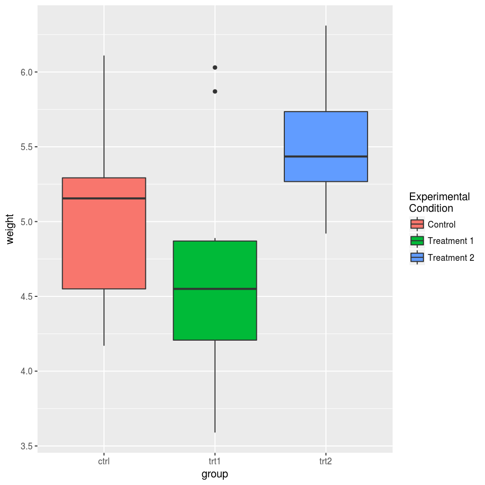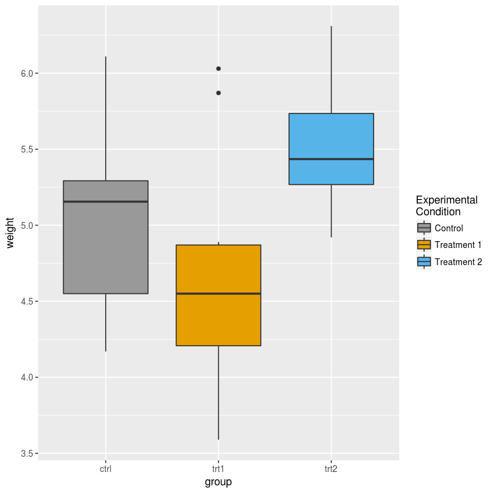
Veja que isso não aletrou o eixo X do gráfico.
Modificando a aparência da legenda
Existem inúmeras modificações que podem ser realizadas na aparência da legenda. Todas elas estão relacionadas à modificação do element_text. Veja neste link todos os atributos que podem ser modificados.
# Mudando a aparência do título
bp + theme(legend.title = element_text(colour="blue", size=16, face="bold"))
# Mudando a aparência dos rótulos
bp + theme(legend.text = element_text(colour="blue", size = 16, face = "bold"))
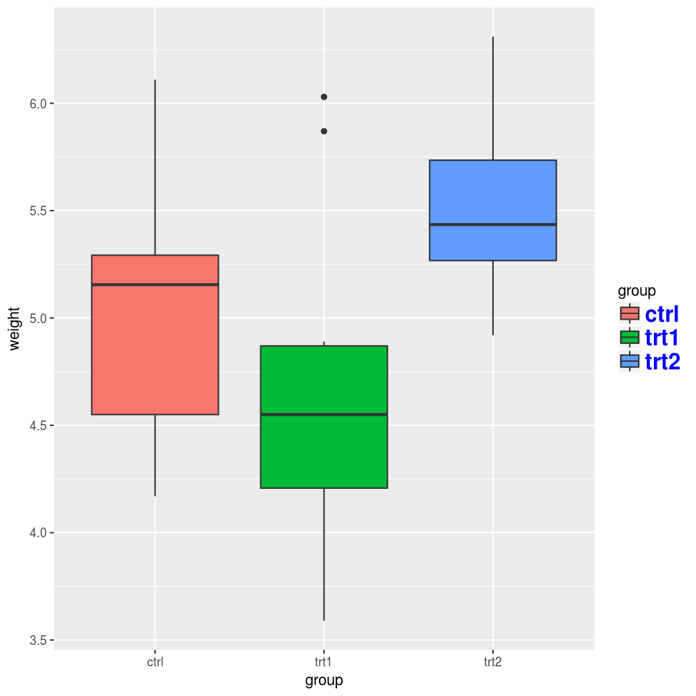
Modificando a posição da legenda
É possível controlar a posição da legenda facilmente escolhendo uma das posições (left/right/top/bottom).
bp + theme(legend.position="top")

Também é possível controlar a posição da legenda de forma precisa usando a função theme(). A legenda será posicionada dentro do gráfico com o ponto central sendo o valor do argumento legend.position. Esses valores são definidos de forma que o ponto (0,0) seja o canto inferior esquerdo e (1,1) seja o canto superior direito.
bp + theme(legend.position=c(.5, .5))
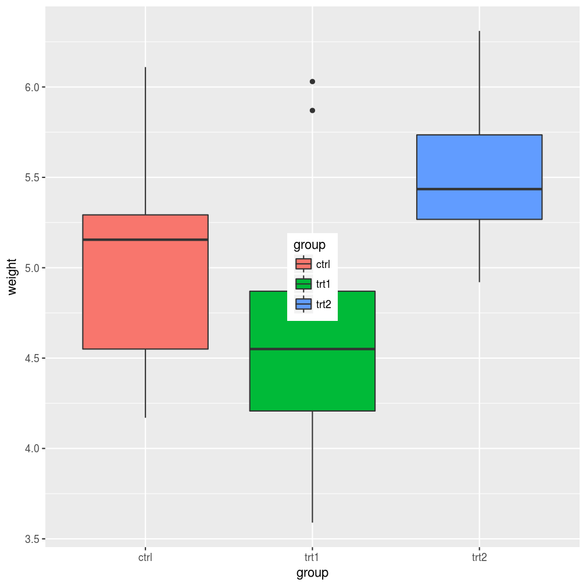